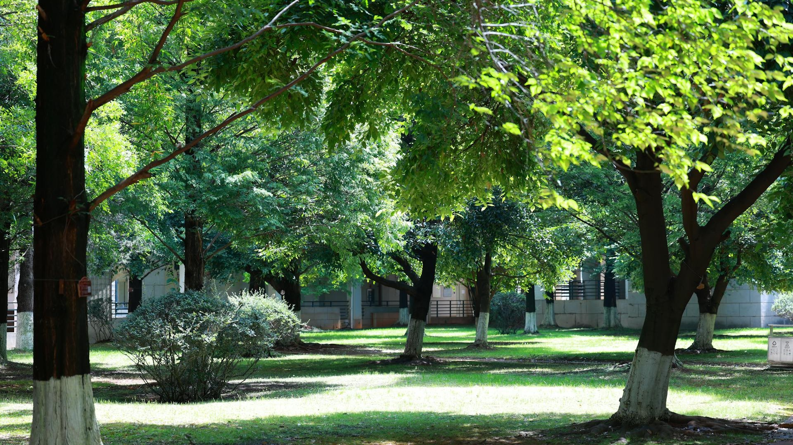

Um bairro densamente construído quase não possui árvores ou áreas verdes.
As ruas são asfaltadas, há muitos prédios e o calor é intenso durante a maior parte do dia.
Moradores relatam aumento no consumo de energia e dificuldade para cultivar plantas.
